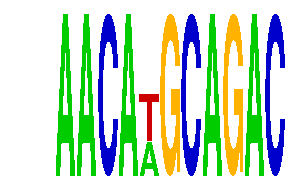

family_19 |
|---|
|  |
| Download PWM |
| Download instances (motifs) |
| Show motif distribution |
Query_ID | Query_Consensus | Subject_Name | Source_DB | Subject_ID | Length | Orientation | Offset | Divergence | Overlap | Subject_Consensus |
|---|---|---|---|---|---|---|---|---|---|---|
| family_19 | AACATGCAGAC | TGTTTGY | JASPAR | PF0083 | 7 | reverse-complement | -3 | 0.091 | 4 | TGTTTGT |
| family_19 | AACATGCAGAC | RTAAACA | JASPAR | PF0036 | 7 | as given | -3 | 0.091 | 4 | GTAAACA |
| family_19 | AACATGCAGAC | FOXO3 | JASPAR | MA0157.1 | 8 | as given | -4 | 0.292 | 4 | TGTAAACA |
| family_19 | AACATGCAGAC | FOXD1 | JASPAR | MA0031.1 | 8 | as given | -3 | 0.335 | 5 | GTAAACAW |
| family_19 | AACATGCAGAC | FOXO4 | HOCOMOCO | FOXO4_HUMAN.H10MO.C | 9 | reverse-complement | -4 | 0.668 | 5 | TTGTTTAYT |
| family_19 | AACATGCAGAC | FOXP2 | HOCOMOCO | FOXP2_HUMAN.H10MO.A | 9 | reverse-complement | -4 | 0.740 | 5 | NTGTTTACN |
Sequence | Start_position (from start) | Start_position (from end) | Average conservation | Best conservation score | Instance_with_best_CS | Best_Z-score | Instance_with_best_ZS | Strand |
|---|---|---|---|---|---|---|---|---|
| chrX:99076582-99078200 | 1025 | 1036 | 0.606273 | 0.927 | AACAWGCAGAC | 14.270223 | AACRWGCAGAC | -1 |
| chr8:34902160-34904200 | 425 | 436 | 0.000636364 | 0.003 | AACAWGCAGAC | 14.270223 | AACRWGCAGAC | 1 |
| chr13:110707000-110709661 | 74 | 85 | 0.00636364 | 0.048 | AACAWGCAGAC | 14.270223 | AACRWGCAGAC | 1 |
| chr16:5847600-5849800 | 973 | 984 | 0.00727273 | 0.014 | AACRWGCAGAC | 14.270223 | AACAWGCAGAC | 1 |
| chr2:166027700-166030700 | 755 | 766 | 0.00136364 | 0.003 | AACAWGCAGAC | 14.270223 | AACRWGCAGAC | 1 |
| chr8:47498400-47501400 | 420 | 431 | 0.360636 | 0.685 | AACAWGCAGAC | 14.270223 | AACRWGCAGAC | 1 |
| chr4:137715900-137718500 | 787 | 798 | 0.198091 | 0.252 | AACRWGCAGAC | 14.270223 | AACAWGCAGAC | -1 |
| chr8:119716200-119719130 | 915 | 926 | 0.434455 | 0.767 | AACRWGCAGAC | 14.270223 | AACAWGCAGAC | 1 |
| chr13:45824900-45826600 | 269 | 280 | 0.000363636 | 0.003 | AACRWGCAGAC | 14.270223 | AACAWGCAGAC | 1 |
| chr11:65478055-65479400 | 235 | 246 | 0.00327273 | 0.01 | AACRWGCAGAC | 14.270223 | AACAWGCAGAC | 1 |
| chr3:135236053-135237600 | 535 | 546 | 0.0932727 | 0.177 | AACAWGCAGAC | 14.270223 | AACRWGCAGAC | 1 |
| chr11:98227000-98231200 | 3213 | 3224 | 0.0239091 | 0.034 | AACAWGCAGAC | 14.270223 | AACRWGCAGAC | 1 |